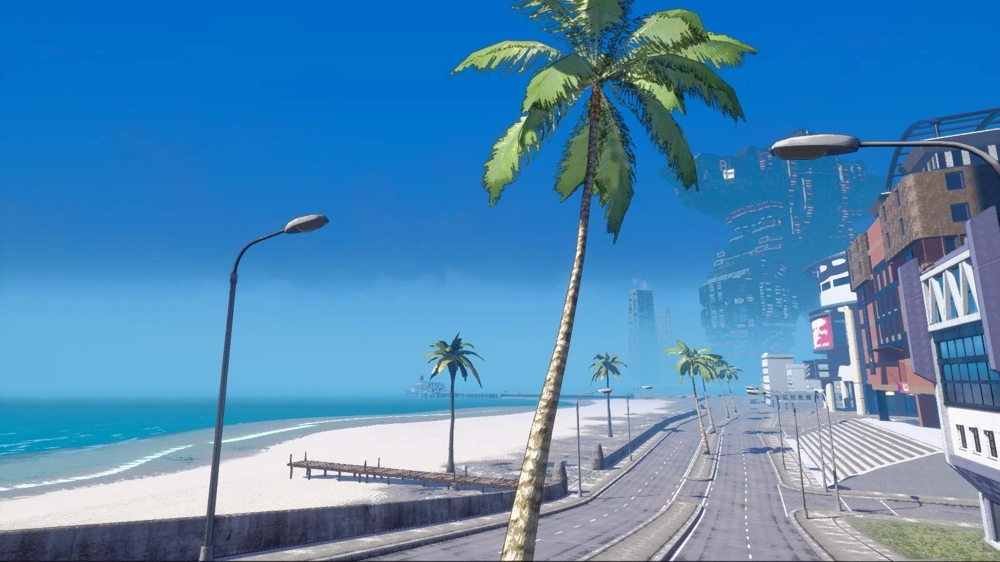
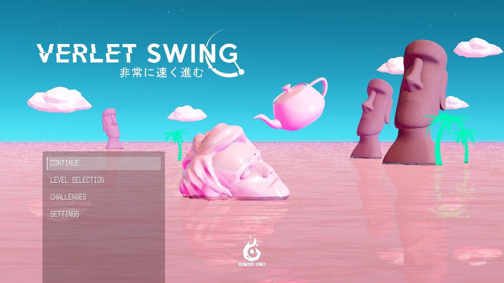
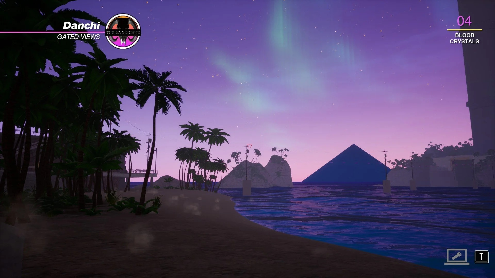

Website Review
For this review, I have chosen the website below based on my experience using it and the feelings and emotions from using it
Luni.app
1] What was the first thing I paid attention to when interacting with the experience?
Some of the things I paid attention when browsing the site was the vibrant pastel colours used and playful animations of some of the objects and interactable gimmicks on certain pages.

2] List of common discrete actions done while exploring the website:
The most common actions I have done while exploring the website were clicking on interactable gimmicks and hovering around the 3D space of the main page. I also played some of the minigames on the Omada section of the website, trying to score as many points as possible.


3] Parts and experiences that I spent most time engaging with:
I spent most of my time playing around the small interactable minigames. They were fun and engaging, with a social aspect involving scoreboards and points system, showing scores from other visitors of the website. Creating a sort of communal aspect of likeminded individuals interacting with one another while also having the same interests.
4] What was the most common action in your two-minute interaction with the experience?
The most common action during my interaction with the website was just playing around with the 3D space of each page, rotating and hovering around the space and admiring the 3D web design. I was intrigued by the 3D space on the website and the interactive elements within it.
5] My impression of the intended primary goal of the interactive experience?
I had a lot of fun playing with the interactive experience of the website, the interactive gimmicks (ie. Laptop, punching bag, frying Pan) were a quirky addition to the website and the minigames were fun and engaging, with a communal aspect where you can see the high scores of other visitors of the site.


6] How does the interactive experience communicate this primary goal?
This interactive experience communicated the idea that this company is outgoing, innovative, and creative. A company that is trying to present itself as fun and unique, and spearheading new methods of media through their distinct app design and uniquely created platforms. This gave me a sense that the company likes a cheerful and playful aesthetic in their work and can create a clean and engaging piece of media.
7] My impression of how the experience should be interacted with over time? (For how long and how many different times)
In my opinion, the website should be browsed for 15 minutes each and in 3 different times. With the many animations, various ways to navigate the 3D space and small minigames of the webpage, it will keep the visitor intrigued and engaged for a while to play around and be engaged with the interactive gimmicks and minigames.
8] How does the interactive experience communicate how it should be interacted with over time?
Over time, interacting with the website made me think about the design choices that the company is using to sell themselves as a unique and innovative organization whose work is designed for the future in the field of digital media. It also taught me to slow down and appreciate the art style and 3D design while exploring the website, find interesting gimmicks and play around with the space.
9] What other forms of media (digital or otherwise) does the experience reference?
The experience referenced and draws heavy inspirations from Vaporwave art, which creates a nostalgic yet futuristic atmosphere with pastel colors and 80s aesthetics, taking inspiration from the artstyle of games like Paradise Killer and Verlet Swing. It also references old school arcade games with a scoreboard where people can compete with other players and visitors of the website and competing with one another to beat each other’s high score.



10] What does this reference/s communicate about how I should act when engaging with the research experience?
It made me act a bit more playfully. With the various interactable gimmicks and minigames, it made me click the various 3D objects in each webpage, trying to find out if it reacts or plays.
11] What does this reference/s communicate about how I should feel when engaging with the research experience?
Engaging with the website encouraged me to feel more relaxed and curious, rather than neutral or informational. The pastel colour palette of the website made me feel more fun with the playful and creative vibe it was going for as compared to the typical serious and business-like websites of most companies.
12] What is the most frustrating part of the interaction to you and what makes that part frustrating?
For the certain section like the Luni team members part in the Studio Page, the horizontal scrolling while seeing the various members and their roles in the company was frustrating as it scrolls horizontally as you scroll down, making it difficult to catch the names of some of the members and their roles. This makes it difficult for visitors to find out who to look for if they have any queries of certain subjects about the company.

13] What is the most satisfying part of the interaction to you and what makes that part satisfying?
The most satisfying part of the interaction was the sense of discovery and exploration within the 3D space. The way the environment responded to my actions and the visual feedback provided a sense of accomplishment and engagement that made the experience enjoyable. The transitions from the various pages were satisfying. The smooth and seamlessly transition when I select a certain category of the page to the destination was crisp and effective. It looks as if I was teleported to another level of a game, which portrays the company's fun and creative character.